Questo dolce, sebbene faccia parte della cultura gastronomica napoeltana è di origini polacche.
L’inventore, infatti, fu lo zar di Polonia Sanislas Leczynski, che decise un giorno di mettere a punto un dolce molto più morbido del kugelhupf, dolce tipicamente polacco che il sovrano trovava però troppo secco ed asciutto, aggiungendo del rum.
Il risultato lo lasciò entusiasta e dalla sua corte questo straordinario dolce è arrivato anche a Napoli dove veniva consumato dalle maggiori famiglie nobili del tempo.
Ad oggi il babà è un vero e proprio classico per i napoletani ed un simbolo incontrastato di questa terra.
Ricetta
| Difficoltà | Media |
| Tempo di preparazione | 40 Minuti |
| Tempo di cottura | 13 Minuti |
| Porzioni | 15 Persone |
| Metodo di cottura | Forno |
| Cucina | Italiana |
Ingredienti
Per l'impasto
- 125g Farina 00
- 15 Zucchero
- 50g Burro
- un pizzico di Sale
- 2 Uova intere
- 15g Lievito di birra
- 1 Tuorlo
- 15g Latte
Per lo sciroppo
- 500g Acqua
- 250g Zucchero
- 250g Rum
- 1 Limone
Per decorare
Preparazione della
Pasta del Babà
Iniziate a preparare i babà al rum, mescolando brevemente farina e lievito nella planetaria con il gancio, oppure a mano.
Aggiungete latte, uova e tuorlo, precedentemente mescolati e lavorate per qualche minuto fino a quando sarà omogeneo.
Per evitare la formazione di grumi, aggiungete il composto di uova e latte mentre la planetaria è in funzione o,
se lavorate a mano, continuando a mescolare.
Unite lo zucchero e mescolate. Aggiungete infine il sale e il burro, ammorbidito a temperatura ambiente.
L’impasto dovrà risultare morbido, quasi liquido.
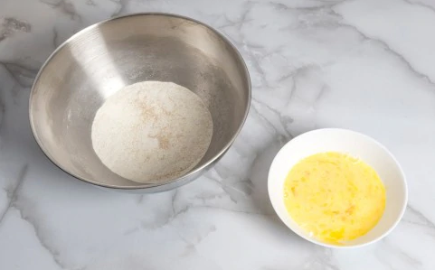
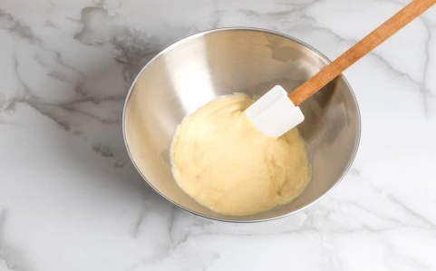
Lievitatura
Trasferite l’impasto in una sac à poche. Versatelo negli stampi, riempiendo fino a circa 1 cm dal bordo.
Lasciate lievitare per circa 30 minuti alla temperatura di 30° (nel forno spento, con luce accesa).
L’impasto dovrà fuoriuscire dagli stampi, formando una cupoletta.
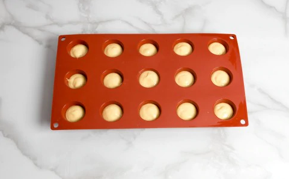
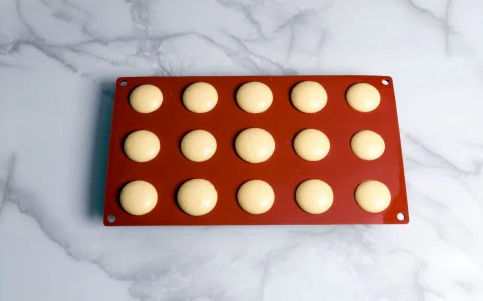
Cottura
Infornate a 180° in forno ventilato preriscaldato per circa 13 minuti. I babà sono pronti quando si sfilano facilmente dallo stampo.
Si può tagliare il fondo di un babà e verificare l’alveolatura dell’impasto.
Sformare e lasciare raffreddare bene.
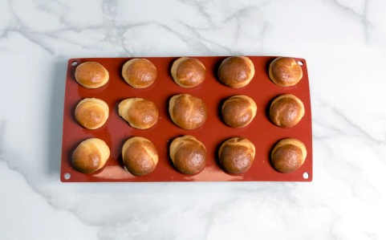
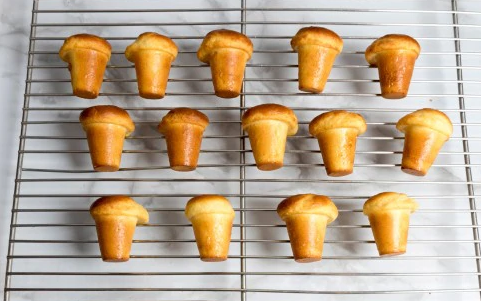
Preparare la Bagna
In un pentolino fate scaldare acqua, zucchero e scorza di limone. Portate a bollore, poi filtrate. Aggiungete il rum.
Trasferite la bagna in una ciotola e, quando è ancora calda, immergete completamente i babà per qualche momento. Fate scolare su una gratella per dolci.
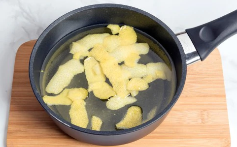
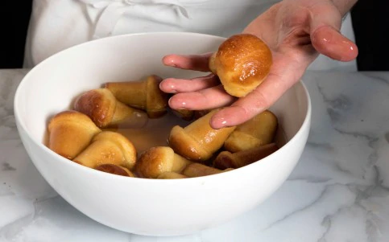
Se lo desiderate, potete spennellare i babà con una marmellata a piacere, per renderli lucidi.
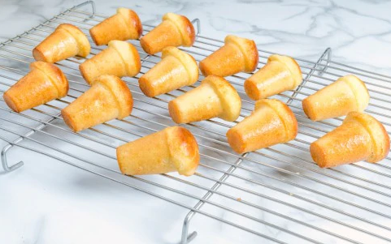
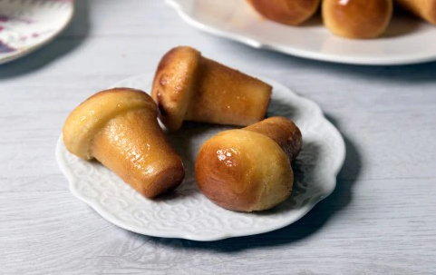
Fate riposare in frigorifero circa 1 ora prima di servirli per gustarli al meglio.
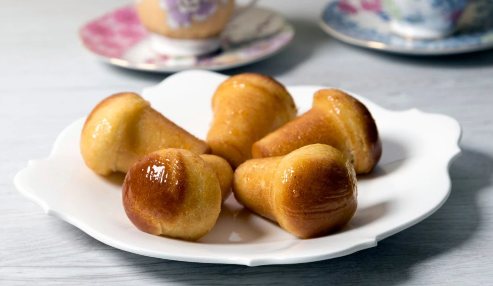
Conservazione
I babà al rum si conservano in frigorifero per 4 giorni circa, coperti con della pellicola trasparente oppure chiusi all’interno di un contenitore ermetico.